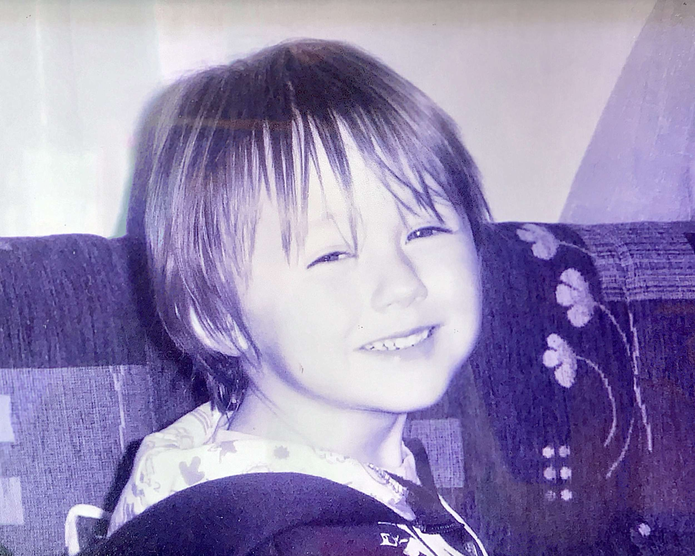
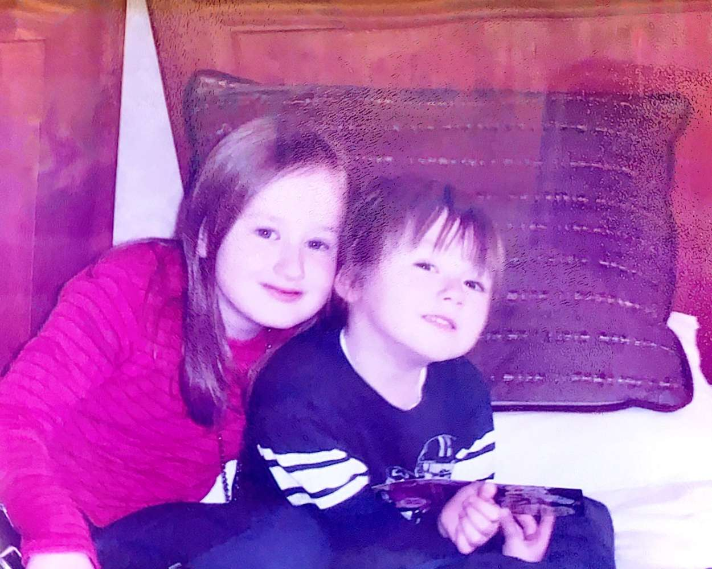
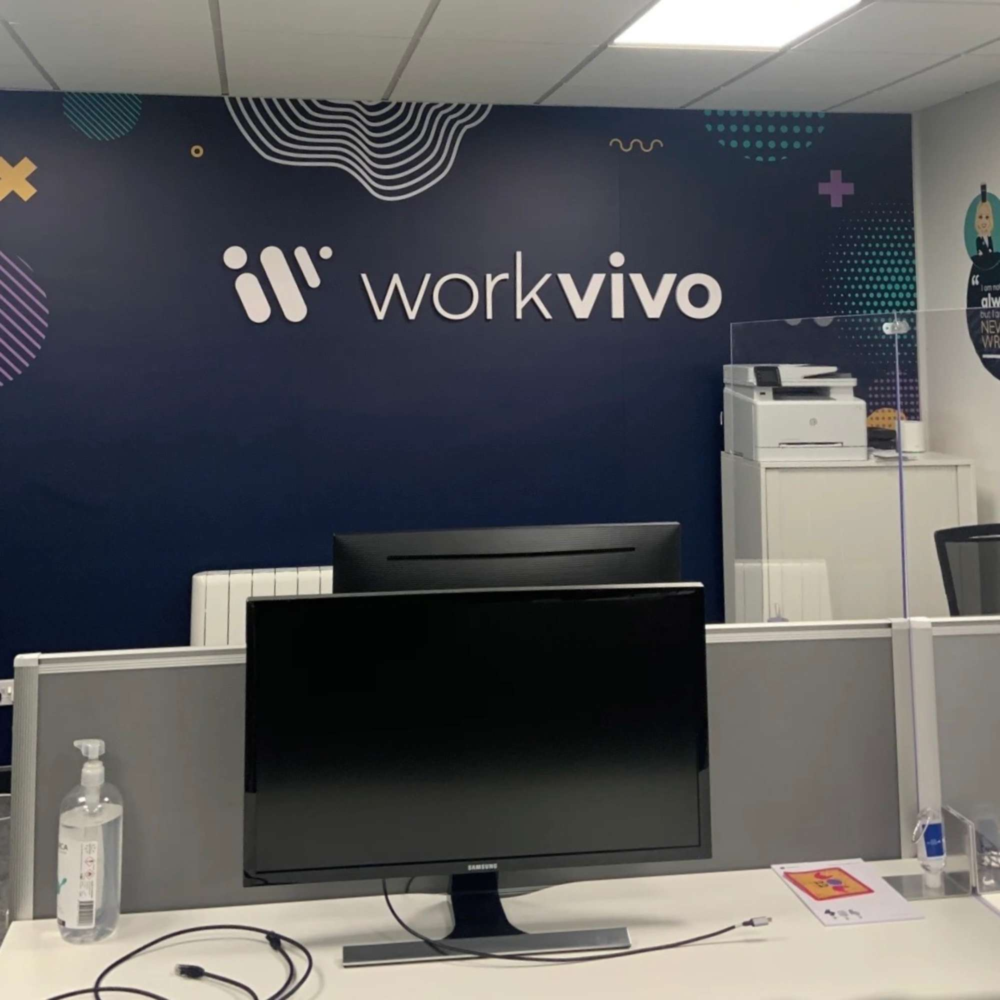
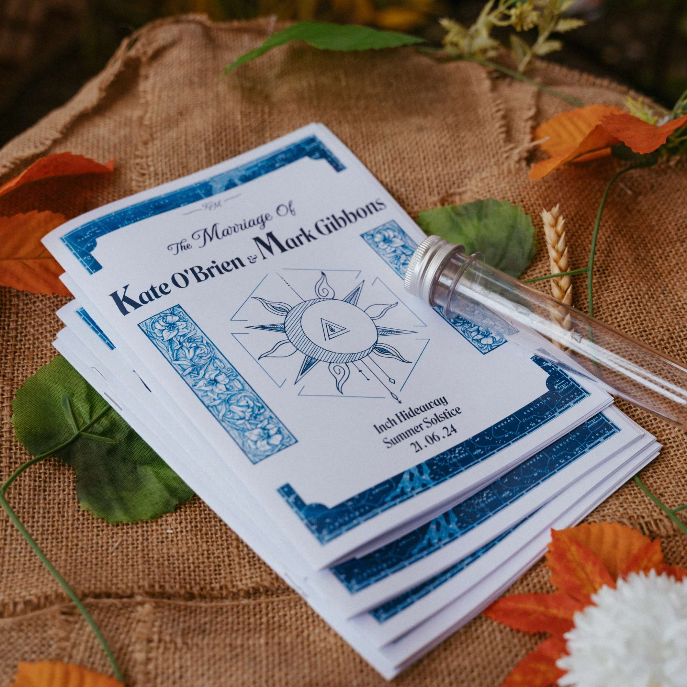
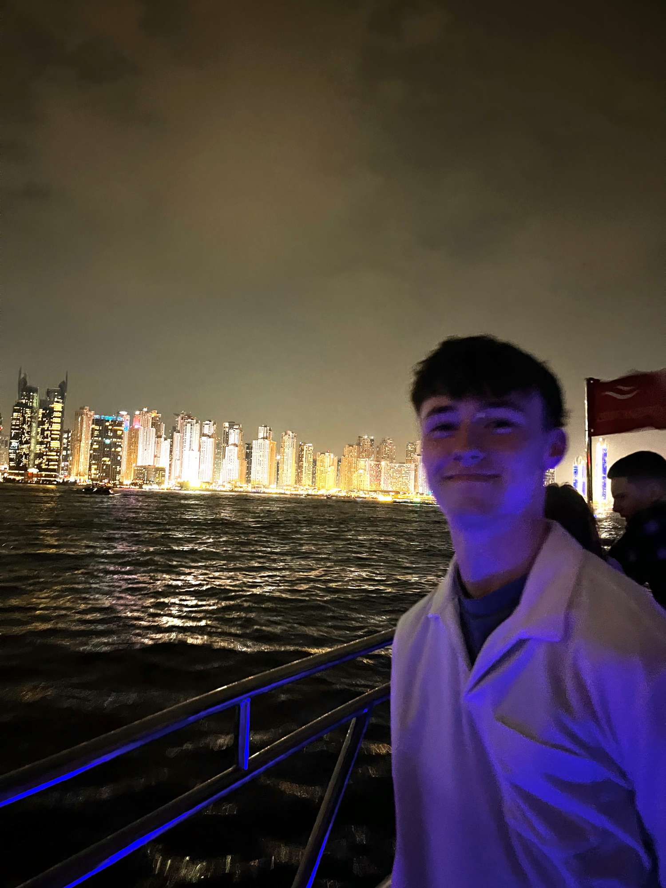

1/4
An Introduction
Welcome to my portfolio. While I was growing up, I was always fascinated by the cover arts of my favourite music, or all of the posters lining the cinema walls. I started designing posters a few years back when I went to buy some posters for my wall and couldn't find any ones that I liked. So I mixed that with my interest in graphic design and art and taught myself Photopea (the free knock-off Photoshop). It's a big goal of mine to one day be designing for these artists that I listen to and create these posters about.

2/4
Music's Impact
Music is something that runs in the family, especially piano. From my granny, down the years to my sister. When I was younger, my parents gave me the old guitar that was passed down through the family. I took lessons for a while, but only came back to it years later when I was clearing out the attic. I watched a lot of Marin Music YouTube videos, plus just learning all my favourite songs on guitar. Now I have three guitars to my name; the family Concerto, a Fender Squire, and a new Crafter semi-acoustic. Somewhere in the middle, I tried my best (poorly) to teach myself the piano the same way, with many many YouTube tutorials.

3/4
The Technical Side
A few years back I started coming to the MPTS Saturdays in UCC. It covers Python, HTML, and CSS, and from it I got an interest in the UI/UX side of WebDev. Then, MPTA the year after; which was working toward the IrlCPC competition hosted in UCC, that I took part in. I also got to do work experience in Workvivo, where I learnt a bit more about graphic design. After teaching myself Figma, I ended up using it to design posters for the music I was listening to while learning the ropes, and from there started with the free, slow version Photoshop, Photopea.

4/4
Weddings and Concerts
I got my first commission when my cousin asked me to design everything she needed for her wedding day, from booklets to menus. That's when I set up mftgraphics, and have been slowly adding to the portfolio since. For every concert I'd go to, or every album I'd enjoy, I'd design something for my wall. I then started to post them online, where I realised a lot of artists do see what you post. It's a goal of mine to someday be working with these artists on their visual identity, album covers, and their merch.

The End
You've Reached The Bottom
Thanks for reading, hope it didn't bore too much.
Back to Home